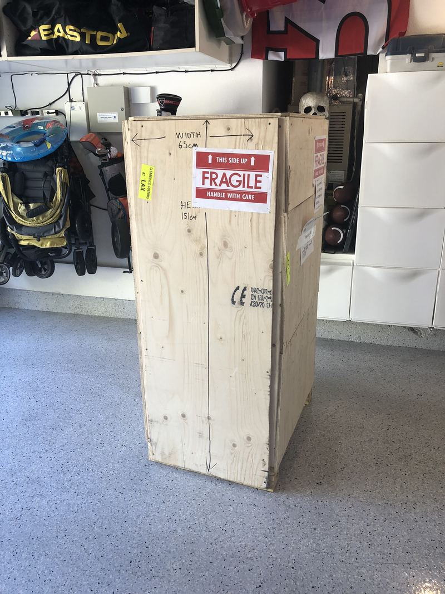
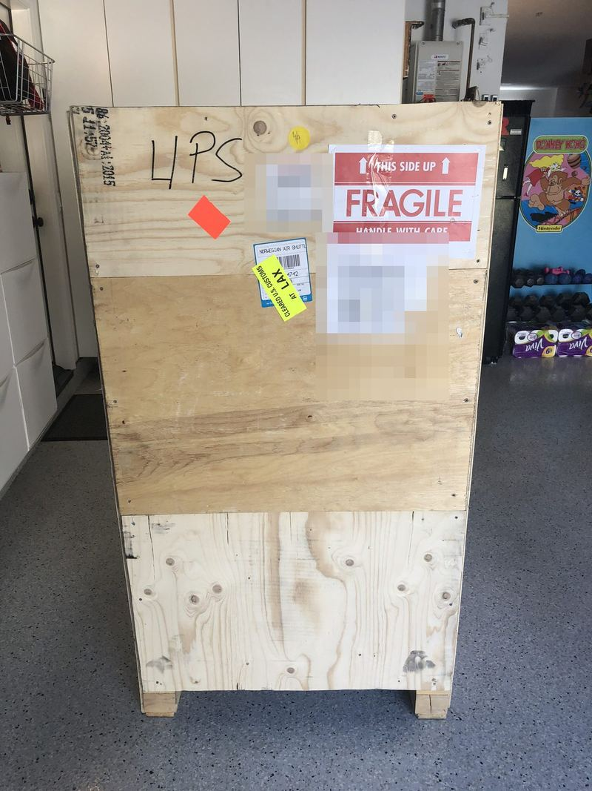
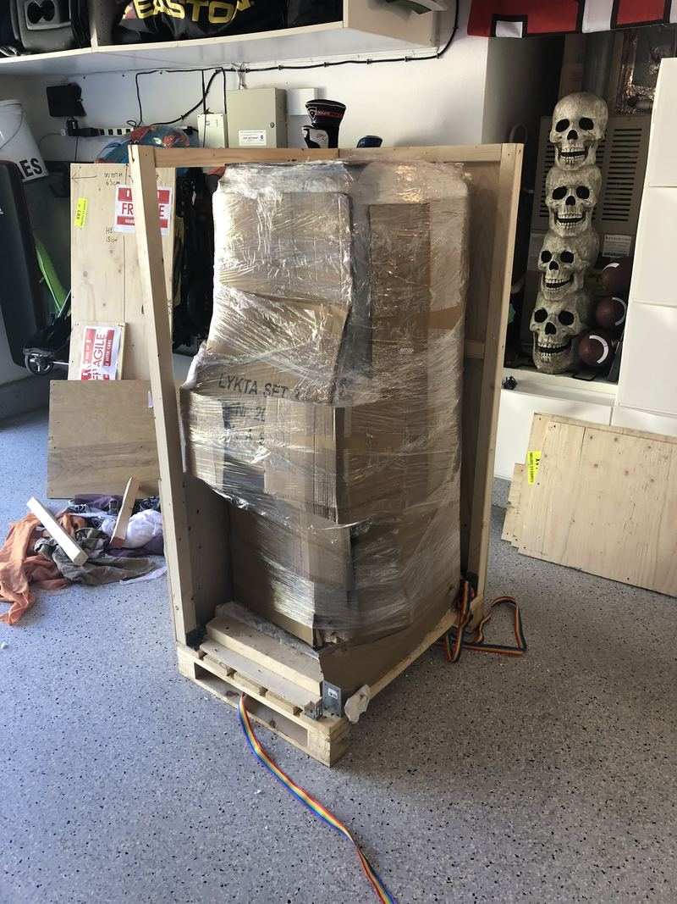
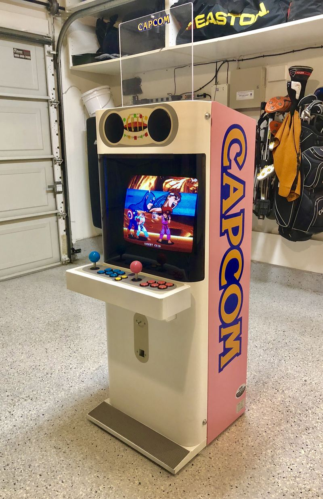
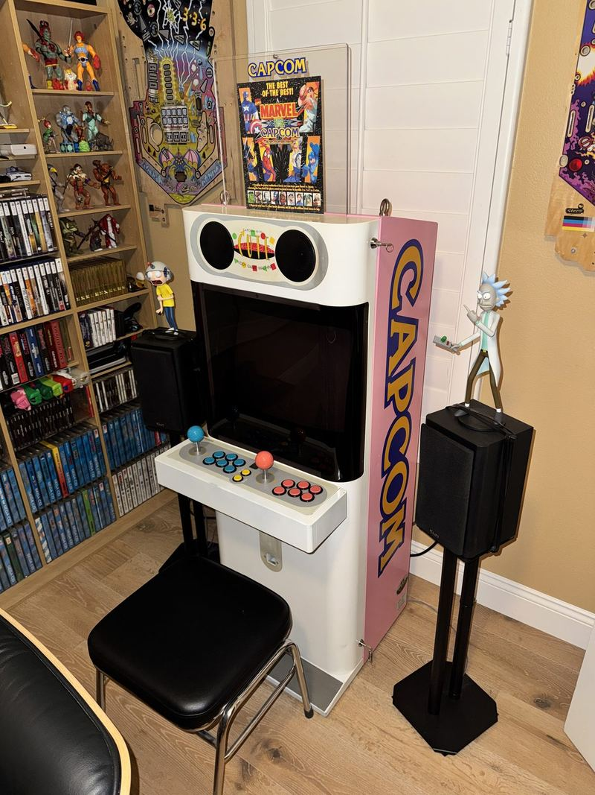

The Mini Cute
Capcom's smallest arcade cabinet, built for Japanese kids in 1991 — and how this pink one crossed half the world in a crate to hold court in a San Clemente game room.
In Japan, arcade cabinets are "candy cabs" — sleek, sit-down machines in molded pastel plastic, as far from the black plywood American upright as a machine can get. In 1991, Capcom built the smallest and most charming of them all: the Mini Cute. At just 1,300mm tall, it's one of the tiniest arcade cabinets ever made, deliberately scaled down and aimed at kids — Capcom's own marketing pitched it as a design piece first and a machine second. It came in three colors — pink, yellow, and turquoise — and packed a proper 18-inch monitor that rotates, so the same little cabinet could run horizontal fighters or vertical shooters. Japan-only, never exported, and rarely surrendered by the people who own them: when Mini Cutes change hands at all, they change hands quietly, at prices that make grown collectors wince.
Which is what makes this one's journey the best part. It wasn't found stateside, and it didn't come through an importer's showroom. A friend from Sweden — one of those friendships that starts on the KLOV forums over some technical thread and turns into the real thing — sourced this exact cabinet, built a crate around it with his own hands, and shipped it across the Atlantic and a continent to San Clemente. The arcade community talks a lot about machines; the machines are really an excuse for this part. Somewhere between Stockholm and Southern California, a pink kiddie cabinet from 1991 became the most well-traveled machine in the collection.





Why pink? Because if you're going to own a machine whose entire design brief was "make children smile in 1991," you don't order it in a sensible color. The pink is the point — maximum kitsch, zero apology. It's the only candy-style cabinet in a collection full of American plywood, and it makes every machine around it look like it's wearing a suit to a birthday party.
Inside, the cabinet is fully original — no hacked wiring, no cut corners — with one very period-correct trick: a CPS1 board fitted with a Darksoft Multi kit. The CP System was Capcom's arcade workhorse of the Mini Cute's own era — Street Fighter II, Final Fight, Ghouls 'n Ghosts — and the Darksoft flash kit lets one genuine board carry the entire CPS1 library, selectable from a menu. A Capcom cabinet, running Capcom's own hardware, with Capcom's whole golden age inside it. The machine is fully original, and so cute.
Sources & further reading: The Arcade Blogger — Capcom Mini Cute · Museum of the Game